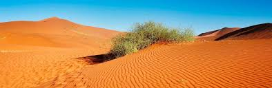
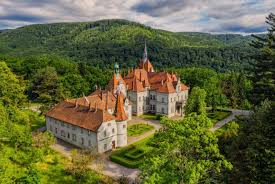
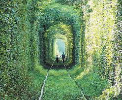

Олешківські піски: пустеля в серці України
Ви, напевно, не очікували побачити пустелю в Україні, але вона є! Олешківські піски — це найбільший піщаний масив у Європі. Тут можна відчути себе, як у справжній Сахарі, але при цьому в оточенні унікальних природних ландшафтів. Це ідеальне місце для екстремальних подорожей, фотосесій та відпочинку від міської метушні.
- Що подивитися:
-
- Піщані дюни: деякі з них сягають 15 метрів у висоту.
- Оазиси: невеликі ліси та озера посеред пісків, що додають місцю особливого колориту.
Замок-палац Шенборнів: казкова архітектура Карпат
Замість того, щоб прямувати в популярні Карпати, відвідайте Закарпаття, де знаходиться цей унікальний палац. Замок Шенборнів — це справжня перлина, побудована в астрономічному стилі: тут є 365 вікон (як днів у році), 52 кімнати (як тижнів) та 12 входів (як місяців). Замок оточений чудовим парком із рідкісними рослинами та джерелом, яке, за легендою, приносить молодість.
- Чим унікальний:
-
- Архітектура: неоготика, неоренесанс і елементи романтизму
- Дендропарк: тут ростуть сакура, магнолія та інші рідкісні дерева.
Тунель кохання: магічний зелений коридор
Недалеко від Рівного знаходиться одне з найромантичніших місць в Україні — Тунель кохання. Це ділянка залізничної колії, яка повністю покрита деревами та кущами. Зелень утворює ідеально симетричний зелений коридор. Особливо гарно тут навесні та влітку, коли листя найяскравіше
- Чим приваблює:
-
- Романтика: ідеальне місце для закоханих пар, освідчень і весільних фотосесій.
- Природа: вражаючий приклад того, як природа може створювати дивовижні речі, якщо їй не заважати.
Забудьте про стандартні маршрути та туристичні потоки, адже справжня Україна чекає на вас там, де пролягають незвідані стежки. Наша країна — це невичерпна скарбниця, що приховує безліч дивовижних локацій. Від містичних замків Поділля до диких Карпатських лісів та безкраїх степів півдня, кожен куточок має свою унікальну історію, яка чекає на свого слухача.
Не бійтеся зійти з проторених шляхів. Справжні відкриття відбуваються там, де менше людей і більше природи. Подорожуйте, досліджуйте та відчувайте цю країну. Вона набагато більша та цікавіша, ніж ви собі уявляли. Просто дозвольте собі відкрити її заново.
зроблено --2025--
За межами звичних маршрутів
Справжня подорож починається там, де закінчується асфальт і починаються незвідані стежки. Україна — це невичерпний скарб, що пропонує безліч унікальних місць: від містичних замків до диких гірських полонин. Дозвольте собі поринути в цю пригоду, що подарує незабутні емоції та враження, які не знайти в жодному путівнику.
Забудьте про звичні туристичні маршрути. Наша країна приховує справжні скарби, які чекають на своїх першовідкривачів. Це місця, де ще не ступала нога масового туриста, де природа зберігає свою первозданну красу, а історія шепоче свої таємниці. Відкрийте для себе Україну, яка здивує і надихне.